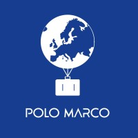
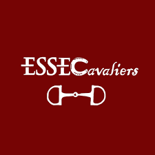
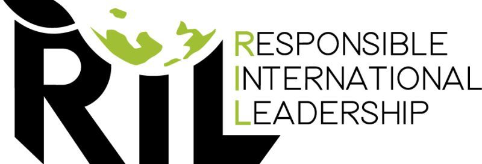

- Julie Dufaÿ -

Welcome to my corner of the web! I'm Julie, an ESSEC Business School student passionate about global business and responsible management. Here, discover my academic journey, extracurricular activities, insights into global business, and commitment to responsible leadership.
My Linkedin profile
- The ESSEC Experience -
Hello, I'm Julie. As a passionate learner at ESSEC Business School, I'm immersed in the dynamic world of global business. Studying at ESSEC has been an exhilarating journey, where I've had the opportunity to delve into various aspects of business management, strategy, and international relations. Being part of ESSEC's vibrant community has not only enriched my academic experience but also provided me with invaluable insights into the interconnectedness of global markets and the significance of cultural diversity in shaping business strategies. I'm enthusiastic about leveraging my education and experiences to contribute meaningfully to the ever-evolving landscape of global business.
- Polo Marco -

While beeing at ESSEC, I am an active member of ESSEC's esteemed travel association, Polo Marco, where I play a pivotal role in organizing a diverse array of events and activities. Through Polo Marco, I've had the privilege of fostering connections with fellow students who share a passion for exploration and cultural immersion. Whether it's coordinating educational trips, cultural exchanges, or networking events, being part of Polo Marco has allowed me to further cultivate my leadership skills and expand my horizons beyond the classroom. It's incredibly rewarding to be involved in creating memorable experiences that not only broaden perspectives but also forge lasting friendships among our members.
- ESSECavaliers -

I'm also an active member of ESSEC's prestigious horse riding association, ESSECavalier, where I take on the responsibility of managing communication and engagement across various social media platforms. Through strategic content creation, community outreach, and event promotion, I strive to enhance the visibility and impact of ESSECavalier within both the university community and the broader equestrian world. It's a role that allows me to combine my passion for communication with my love for horse riding, fostering connections and inspiring others to join us in experiencing the thrill and beauty of this sport. Being part of ESSECavalier not only enriches my university experience but also provides me with invaluable opportunities to grow personally and professionally within a supportive and dynamic community of fellow riders.
- Responsible International Leadership -

I am honored to be among the select group of 20 students chosen to participate in the prestigious Responsible International Management program at ESSEC, in partnership with Darla Moore University in South Carolina. This unique opportunity allows me to delve deep into the complexities of global business practices, with a particular focus on responsible and sustainable management strategies. Collaborating with esteemed faculty members and peers from diverse cultural backgrounds, I am excited to engage in rigorous academic coursework, experiential learning opportunities, and collaborative projects aimed at addressing real-world challenges in today's global business landscape. Being part of this program not only enhances my academic journey but also empowers me to become a responsible leader equipped to make positive contributions to society and the environment through innovative and ethical business practices.